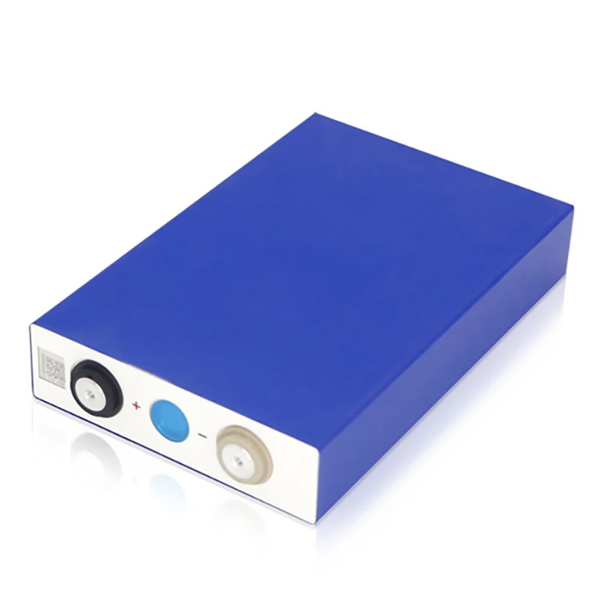
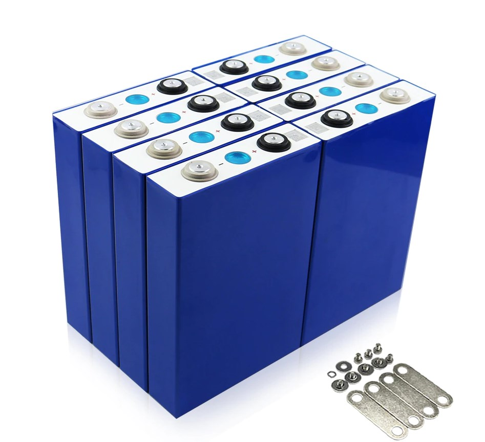

LiFePO4 аккумулятори, відомі також як літій-залізо-фосфатні акумулятори, є одним з найновіших типів перезаряджуємих батарей, які використовуються в різних застосуваннях, від електромобілів до портативної електроніки. Вони пропонують ряд переваг порівняно з іншими типами літієвих акумуляторів, включаючи довгий термін служби, високу стабільність при високих температурах та низький саморозряд. Однак, як і всі технології, вони мають свої недоліки. У наступних розділах ми детальніше розглянемо, технічні характеристики, переваги та недоліки літій-залізо-фосфатних акумуляторів, з чого вони складаються, як їх правильно заряджати, а також де вони використовуються.
Технічні характеристики
- Напруга на піковій величині – 3.65 В
- Напруги в середній точці – 3.3 В
- Номінальна робоча напруга – від 3 до 3.3 В
- Напруга нульового заряду – 2 В
- Мінімальний рівень напруги під навантаженням – 2.8 В
- Робочий ресурс – понад 3500 циклів перезаряджання
- Саморозряд при t=15–18 °C – до 5% на рік
Переваги та недоліки
Переваги
- Безпека: Завдяки хімічному складу LiFePO4, такі акумулятори менш схильні до перегріву і вибуху, що робить їх ідеальними для використання в домашніх умовах.
- Довгий термін служби: LiFePO4 акумулятори зазвичай мають довший термін служби (≈3500 циклів) порівняно з іншими типами літієвих акумуляторів. Вони можуть витримувати більше зарядно-розрядних циклів, що робить їх більш довговічними.
- Термостійкість: стабільно працюють за температури від -30 до +60 °С;
- Екологічність: Вони містять менше шкідливих речовин порівняно з іншими типами літієвих акумуляторів, що робить їх більш екологічно чистими.
Недоліки
- Низька енергетична щільність: LiFePO4 акумулятори мають нижчу енергетичну щільність порівняно з іншими типами літієвих акумуляторів. Це означає, що для забезпечення того самого рівня енергії акумулятори мають більший об'єм та вагу.
- Вища вартість: Виробництво LiFePO4 акумуляторів зазвичай дорожче порівняно з іншими типами, що може негативно відображається на їх вартості.